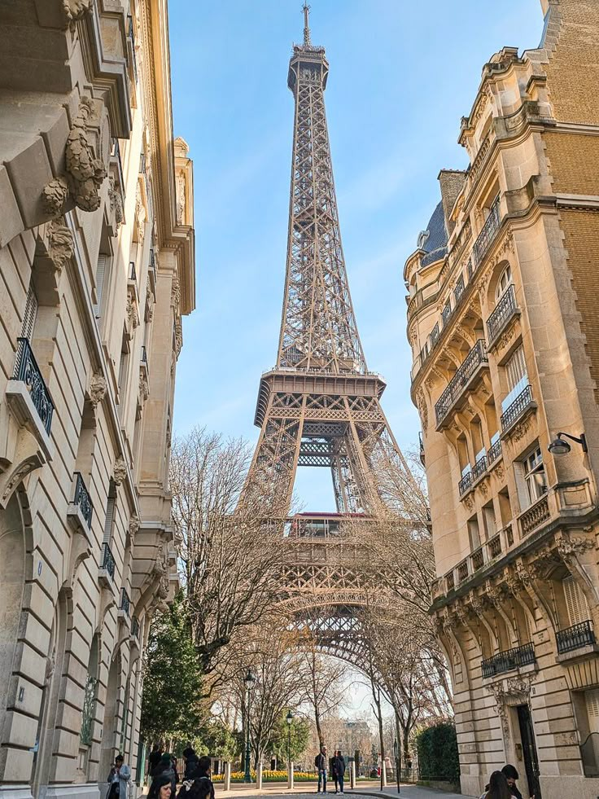
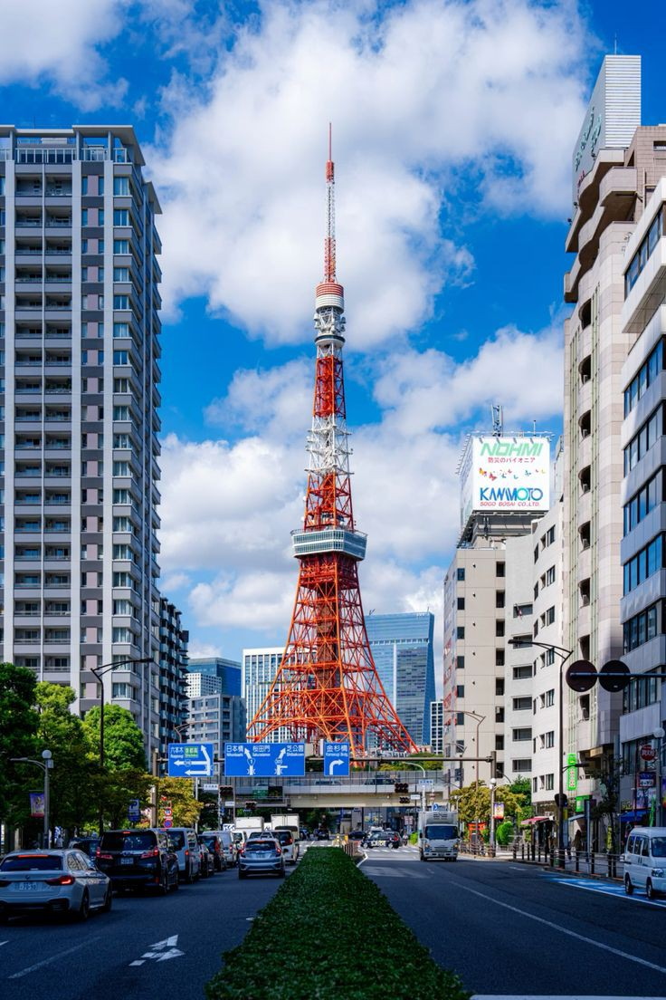
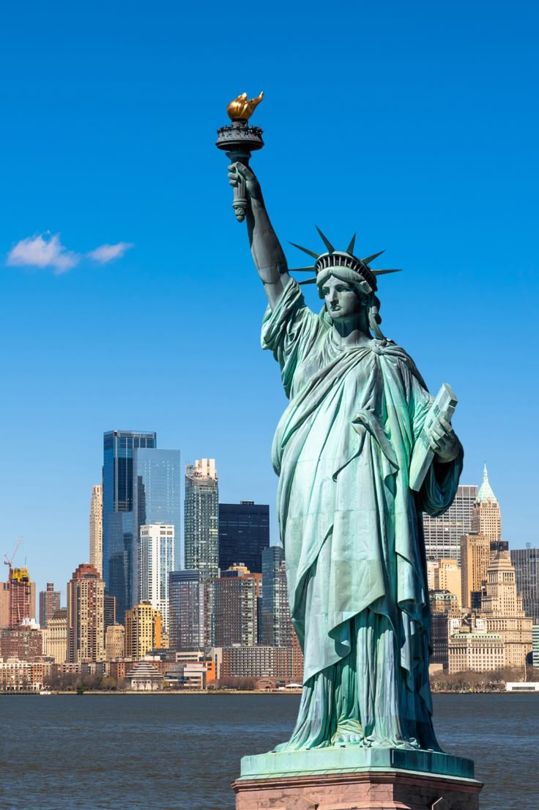
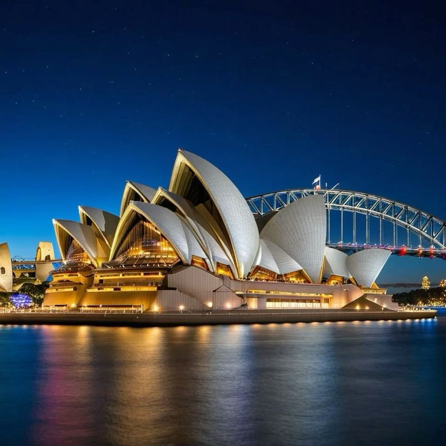

There’s something magical about travel—it ignites the soul and opens the mind. Whether you’re dreaming of cobblestone streets or neon-lit skylines, these four destinations will inspire your next adventure. Let’s dive in!
1. Paris, France
The City of Light never fails to enchant. From the iconic Eiffel Tower to the cozy cafés of Montmartre, Paris blends romance with history. Spring is the best time to visit—think blooming gardens and fewer crowds.
2. Tokyo, Japan
Tokyo is a thrilling mix of tradition and innovation. Wander through ancient temples, then marvel at the futuristic Shibuya Crossing. Autumn paints the city in golden hues, making it a must-see.
3. New York, USA
The Big Apple buzzes with energy. Catch a Broadway show or stand in awe before the Statue of Liberty. Winter adds a festive charm, with ice skating and holiday lights galore.
4. Sydney, Australia
Sydney’s laid-back vibe meets stunning scenery. The Opera House gleams against the harbor, and summer invites you to its pristine beaches. It’s a paradise for sun-seekers.
Quick Glance: My Favorite Destinations
| Destination | Country | Highlight | Best Season | Rating (1-5) |
|---|---|---|---|---|
| Paris | France | Eiffel Tower & charming streets | Spring | 4.8 |
| Tokyo | Japan | Vibrant culture & tech wonders | Autumn | 4.7 |
| New York | USA | Statue of Liberty & Broadway | Winter | 4.5 |
| Sydney | Australia | Opera House & beaches | Summer | 4.6 |
Ready to pack your bags? These spots prove that travel is more than a journey—it’s a story waiting to be written. Share your favorite destination below!